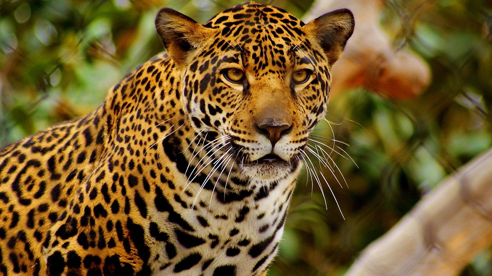

Cheetah
Fastest mammal on land, the cheetah can reach speeds of 60 or perhaps even 70 miles (97 or 113 kilometers) an hour over short distances. It usually chases its prey at only about half that speed, however. After a chase, a cheetah needs half an hour to catch its breath before it can eat. These cats are nimble at high speeds, able to make quick and sudden turns in pursuit of prey. Cheetahs’ bodies are uniquely adapted to help them reach top speeds, from their long, slender limbs and hard foot pads to the flexible spine that gives them their long stride. Cheetahs are famous for their tawny coats covered in black spots, each arranged in a unique pattern to help the animals identify one another. Bold black stripes streak like tears from the inner corners of their eyes down to both sides of their mouths, and the ends of their bushy tails have black rings. The cheetah's excellent eyesight helps it find prey during the day. The cheetah is hard to see because its spotted coat blends with the tall, dry grass of the plains.
